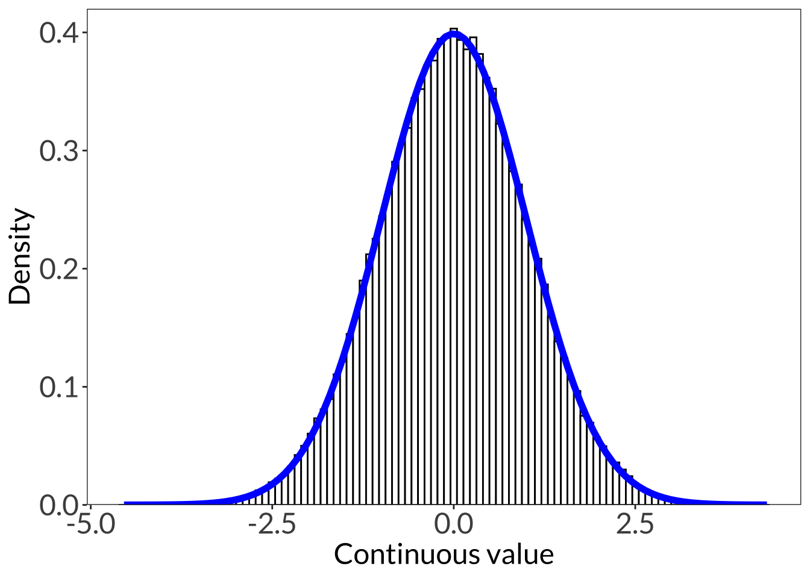
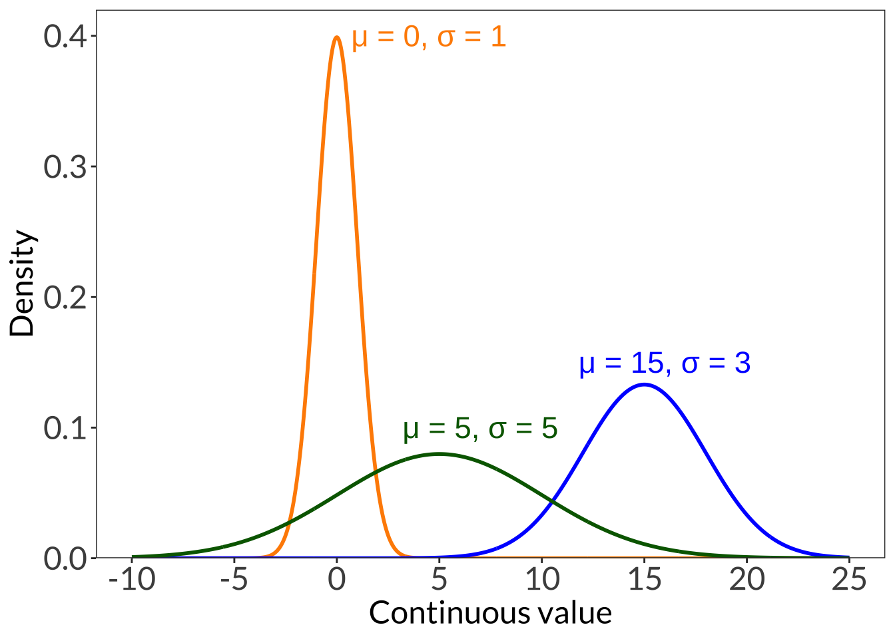
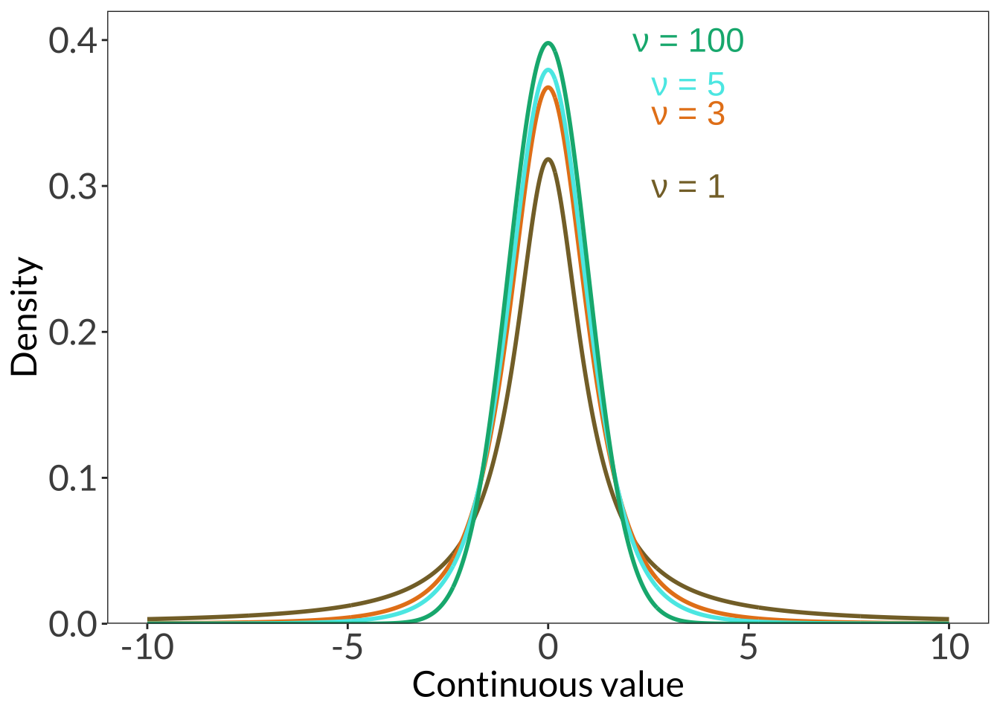
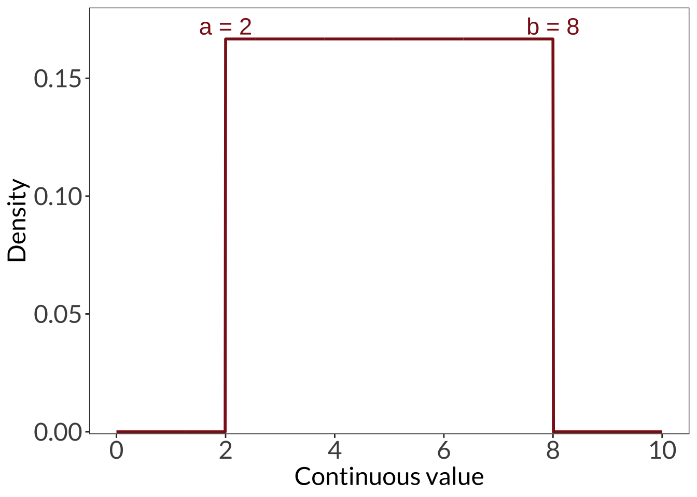
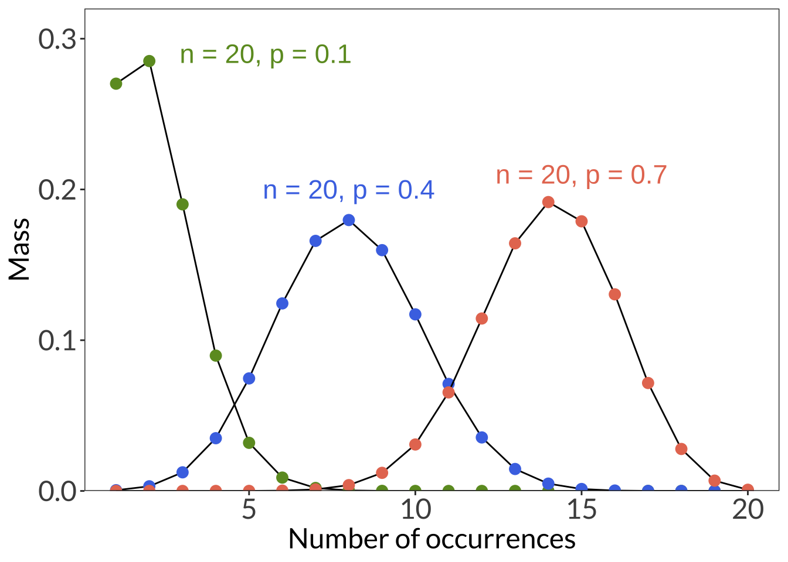
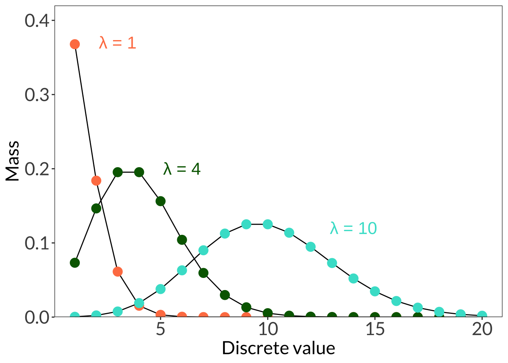

# cleaning
library(tidyverse)
# visualization
library(showtext)
font_add_google("Lato", "Lato")0. set up
1. probability distribution
set.seed(1)
normdist <- rnorm(n = 100000, mean = 0, sd = 1) %>%
as_tibble(rownames = "x")
showtext_auto()
ggplot(normdist) +
geom_histogram(aes(x = value, after_stat(density)), fill = "white", color = "black", bins = 100) +
stat_function(fun = dnorm, args = list(mean = 0, sd = 1), color = "blue", linewidth = 2) +
scale_y_continuous(expand = c(0, 0), limits = c(0, 0.42)) +
labs(x = "Continuous value", y = "Density") +
theme_bw() +
theme(panel.grid = element_blank(),
axis.text = element_text(size = 18),
axis.title = element_text(size = 18),
text = element_text(family = "Lato")) 
2. normal distribution
ggplot(data.frame(x = -10:25), aes(x)) +
stat_function(geom = "line", n = 1000, fun = dnorm, args = list(mean = 0, sd = 1), linewidth = 1, color = "darkorange") +
annotate("text", x = 4.5, y = 0.4, label = "\U03BC = 0, \U03C3 = 1", color = "darkorange", size = 6) +
stat_function(geom = "line", n = 1000, fun = dnorm, args = list(mean = 15, sd = 3), linewidth = 1, color = "blue") +
annotate("text", x = 16, y = 0.15, label = "\U03BC = 15, \U03C3 = 3", color = "blue", size = 6) +
stat_function(geom = "line", n = 1000, fun = dnorm, args = list(mean = 5, sd = 5), linewidth = 1, color = "darkgreen") +
annotate("text", x = 7, y = 0.1, label = "\U03BC = 5, \U03C3 = 5", color = "darkgreen", size = 6) +
scale_x_continuous(breaks = seq(-10, 25, 5)) +
scale_y_continuous(expand = c(0, 0), limits = c(0, 0.42)) +
labs(x = "Continuous value", y = "Density") +
theme_bw() +
theme(panel.grid = element_blank(),
axis.text = element_text(size = 18),
axis.title = element_text(size = 18),
text = element_text(family = "Lato")) 
3. Student’s t distribution
ggplot(data.frame(x = -10:10), aes(x)) +
stat_function(geom = "line", n = 1000, fun = dt, args = list(df = 1), linewidth = 1, color = "#856F33") +
annotate("text", x = 3.5, y = 0.3, label = "\U03BD = 1", color = "#856F33", size = 6) +
stat_function(geom = "line", n = 1000, fun = dt, args = list(df = 3), linewidth = 1, color = "#E6821C") +
annotate("text", x = 3.5, y = 0.35, label = "\U03BD = 3", color = "#E6821C", size = 6) +
stat_function(geom = "line", n = 1000, fun = dt, args = list(df = 5), linewidth = 1, color = "#56E9E7") +
annotate("text", x = 3.5, y = 0.37, label = "\U03BD = 5", color = "#56E9E7", size = 6) +
stat_function(geom = "line", n = 1000, fun = dt, args = list(df = 100), linewidth = 1, color = "#04B37F") +
annotate("text", x = 3.5, y = 0.4, label = "\U03BD = 100", color = "#04B37F", size = 6) +
scale_y_continuous(expand = c(0, 0), limits = c(0, 0.42)) +
labs(x = "Continuous value", y = "Density") +
theme_bw() +
theme(panel.grid = element_blank(),
axis.text = element_text(size = 18),
axis.title = element_text(size = 18),
text = element_text(family = "Lato")) 
4. Uniform distribution
ggplot(data.frame(x = 0:10), aes(x)) +
stat_function(geom = "line", n = 1000, fun = dunif, args = list(min = 2, max = 8), linewidth = 1, color = "firebrick4") +
annotate("text", x = 2, y = 0.172, label = "a = 2", color = "firebrick4", size = 6) +
annotate("text", x = 8, y = 0.172, label = "b = 8", color = "firebrick4", size = 6) +
scale_x_continuous(breaks = seq(0, 10, 2)) +
scale_y_continuous(expand = c(0, 0), limits = c(-0.001, 0.18)) +
labs(x = "Continuous value", y = "Density") +
theme_bw() +
theme(panel.grid = element_blank(),
axis.text = element_text(size = 18),
axis.title = element_text(size = 18),
text = element_text(family = "Lato")) 
5. Binomial distribution
ggplot(data.frame(x = 1:20), aes(x)) +
stat_function(geom = "line", n = 20, fun = dbinom, args = list(size = 20, p = 0.1), color = "black") +
stat_function(geom = "point", n = 20, fun = dbinom, args = list(size = 20, p = 0.1), color = "#6D9929", size = 3) +
annotate("text", x = 5.5, y = 0.29, label = "n = 20, p = 0.1", color = "#6D9929", size = 6) +
stat_function(geom = "line", n = 20, fun = dbinom, args = list(size = 20, p = 0.4), color = "black") +
stat_function(geom = "point", n = 20, fun = dbinom, args = list(size = 20, p = 0.4), color = "#4A76E5", size = 3) +
annotate("text", x = 8, y = 0.2, label = "n = 20, p = 0.4", color = "#4A76E5", size = 6) +
stat_function(geom = "line", n = 20, fun = dbinom, args = list(size = 20, p = 0.7), color = "black") +
stat_function(geom = "point", n = 20, fun = dbinom, args = list(size = 20, p = 0.7), color = "#E67960", size = 3) +
annotate("text", x = 15, y = 0.21, label = "n = 20, p = 0.7", color = "#E67960", size = 6) +
scale_y_continuous(expand = c(0, 0), limits = c(0, 0.32)) +
labs(x = "Number of successes", y = "Mass") +
theme_bw() +
theme(panel.grid = element_blank(),
axis.text = element_text(size = 18),
axis.title = element_text(size = 18),
text = element_text(family = "Lato")) 
6. Poisson distribution
ggplot(data.frame(x = 1:20), aes(x)) +
stat_function(geom = "line", n = 20, fun = dpois, args = list(lambda = 1), color = "black") +
stat_function(geom = "point", n = 20, fun = dpois, args = list(lambda = 1), color = "coral", size = 4) +
annotate("text", x = 3, y = 0.37, label = "\U03BB = 1", color = "coral", size = 6) +
stat_function(geom = "line", n = 20, fun = dpois, args = list(lambda = 4), color = "black") +
stat_function(geom = "point", n = 20, fun = dpois, args = list(lambda = 4), color = "darkgreen", size = 4) +
annotate("text", x = 6, y = 0.2, label = "\U03BB = 4", color = "darkgreen", size = 6) +
stat_function(geom = "line", n = 20, fun = dpois, args = list(lambda = 10), color = "black") +
stat_function(geom = "point", n = 20, fun = dpois, args = list(lambda = 10), color = "turquoise", size = 4) +
annotate("text", x = 14, y = 0.12, label = "\U03BB = 10", color = "turquoise", size = 6) +
scale_y_continuous(expand = c(0, 0), limits = c(0, 0.42)) +
labs(x = "Discrete value", y = "Mass") +
theme_bw() +
theme(panel.grid = element_blank(),
axis.text = element_text(size = 18),
axis.title = element_text(size = 18),
text = element_text(family = "Lato")) 
showtext_auto(FALSE)Citation
BibTeX citation:
@online{bui2023,
author = {An Bui},
editor = {},
title = {Lecture 02 Figures},
date = {2023-04-03},
url = {https://an-bui.github.io/ES-193DS-W23/lecture/lecture-02_2023-04-10.html},
langid = {en}
}
For attribution, please cite this work as:
An Bui. 2023. “Lecture 02 Figures.” April 3, 2023. https://an-bui.github.io/ES-193DS-W23/lecture/lecture-02_2023-04-10.html.